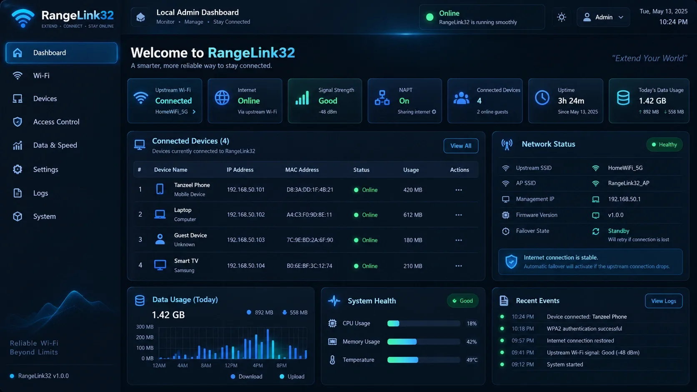
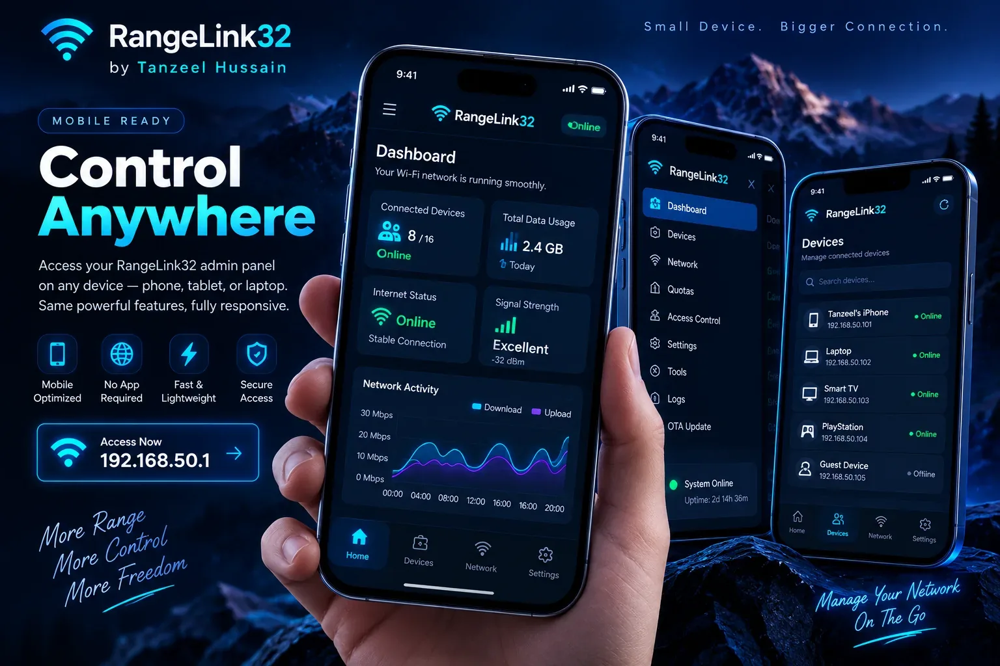
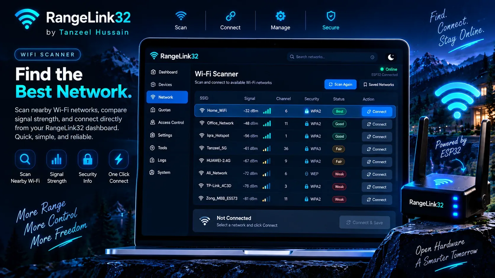
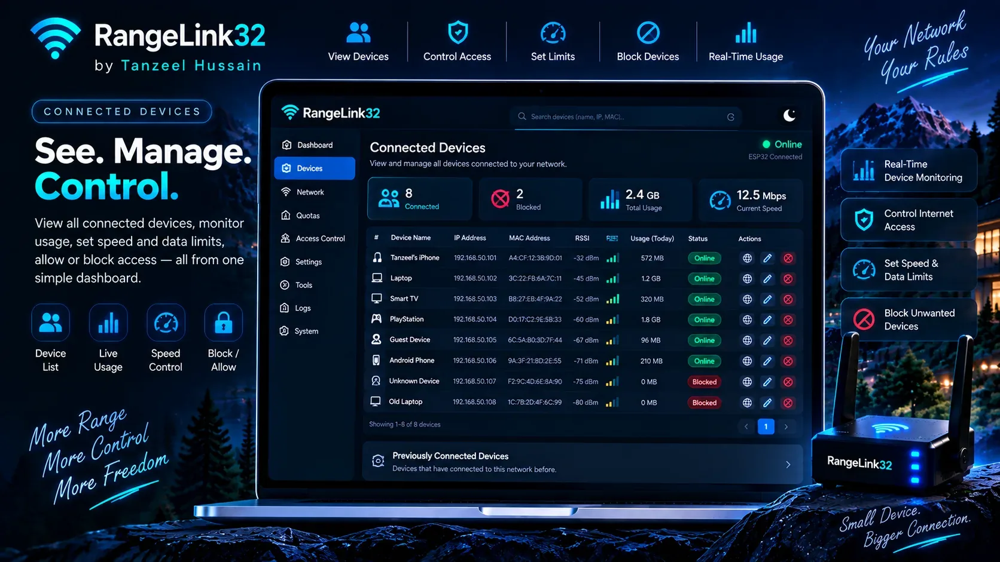
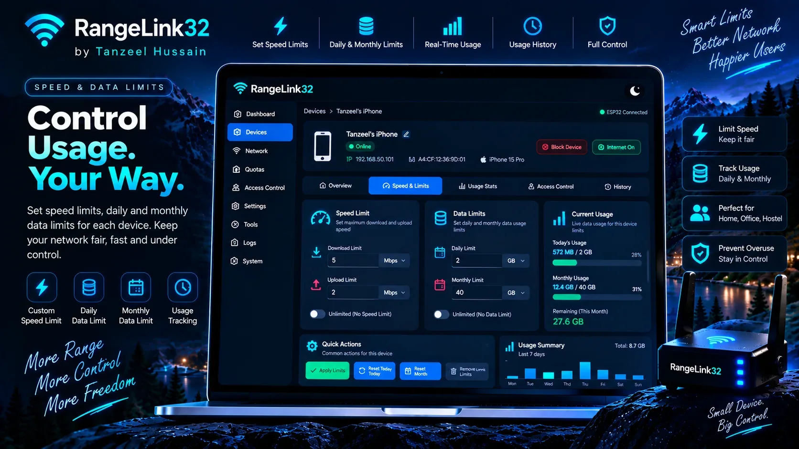
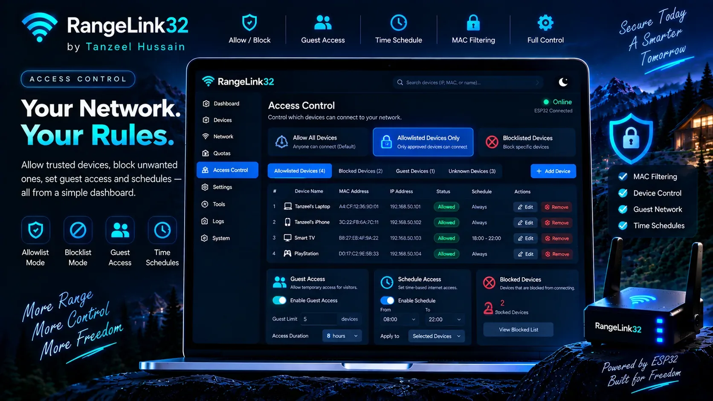
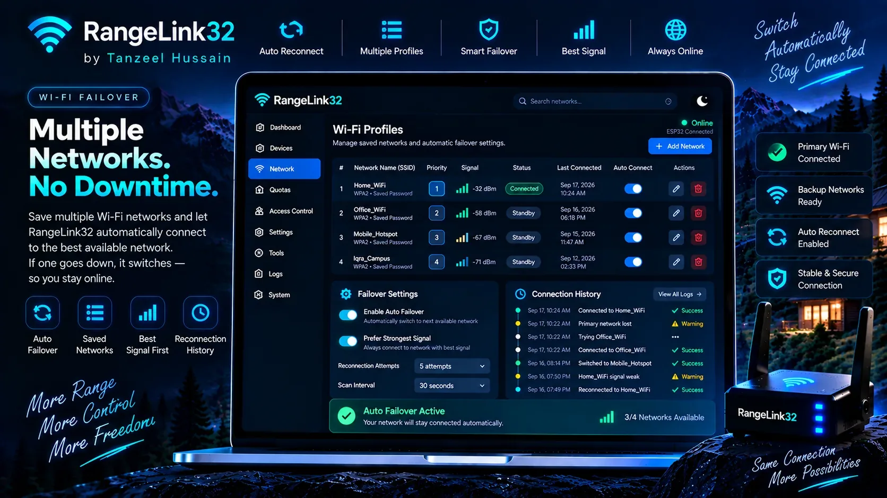
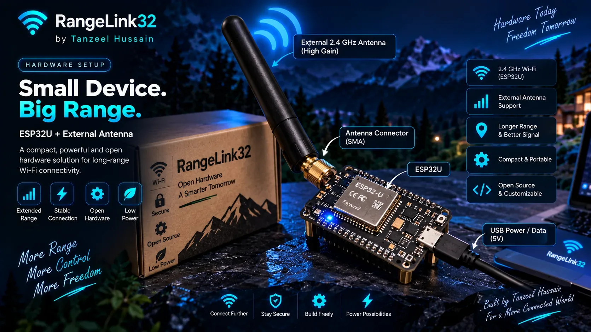

📡
Wi-Fi Extender
STA + AP operation with NAPT forwarding and an ESP32U external-antenna target.
No searching, no guessing. Connect the board by USB and start with the browser installer. Prefer a file? Download the complete firmware image beside it.
rangelink32admin / changeme32Wi-Fi and admin passwords are separate. Change both from the local dashboard after first login.
RangeLink32 turns a classic ESP32U with an external antenna into a managed 2.4 GHz Wi-Fi gateway with automatic reconnect, saved-network failover, device access control, daily/monthly quotas and a secure local admin experience.

RangeLink32 keeps the setup local and gives the administrator router-style controls without depending on a cloud account.
STA + AP operation with NAPT forwarding and an ESP32U external-antenna target.
Reconnect backoff, saved profiles, strongest available saved network and failover behavior.
Known-device history with MAC, IP, RSSI, custom names, approve/block actions and guest access.
Approximate per-device speed caps plus daily and monthly MB/GB quotas with automatic cutoff.
Allow-all or allowlist-only modes, schedules, Internet blocking and persistent client policy storage.
Secure local dashboard, OTA updates, event logs, settings backup/restore and smart placement guidance.
This preview represents the information architecture of the device UI; the actual dashboard runs locally on the ESP32 at its management address.
The first screen already gives you the installer. This section explains exactly what happens next.
Use a data-capable USB cable and keep the board powered during flashing.
Your compatible browser opens the serial-device chooser. Select the ESP32 device and continue.
After flashing, connect to RangeLink32-Setup using the initial password rangelink32.
Sign in with admin / changeme32, then change both default credentials before normal use.
Browser installation is the easiest first-install path. The complete combined binary is also available for manual flashing from offset 0x0.
Eight real project visuals now play automatically in a curved 3D showcase. Hover to pause, swipe on mobile, or select any preview below.








RangeLink32 is intentionally modular: Wi-Fi management, routing, traffic accounting, client policies, secure storage and the admin UI are kept separate.
No. RangeLink32 uses a single ESP32 2.4 GHz radio for upstream and downstream traffic. It is a managed embedded gateway project, not a replacement for high-end dual-radio router hardware.
That is the design: the local management AP remains available so the administrator can diagnose or change the upstream connection.
They are embedded packet-budget caps and should be treated as approximate shaping rather than carrier-grade QoS.
The project has CI compile validation. External-antenna range, sustained throughput, accounting accuracy and long-duration stability still require real ESP32U testing.
Install the firmware, connect your ESP32U and manage the network locally.